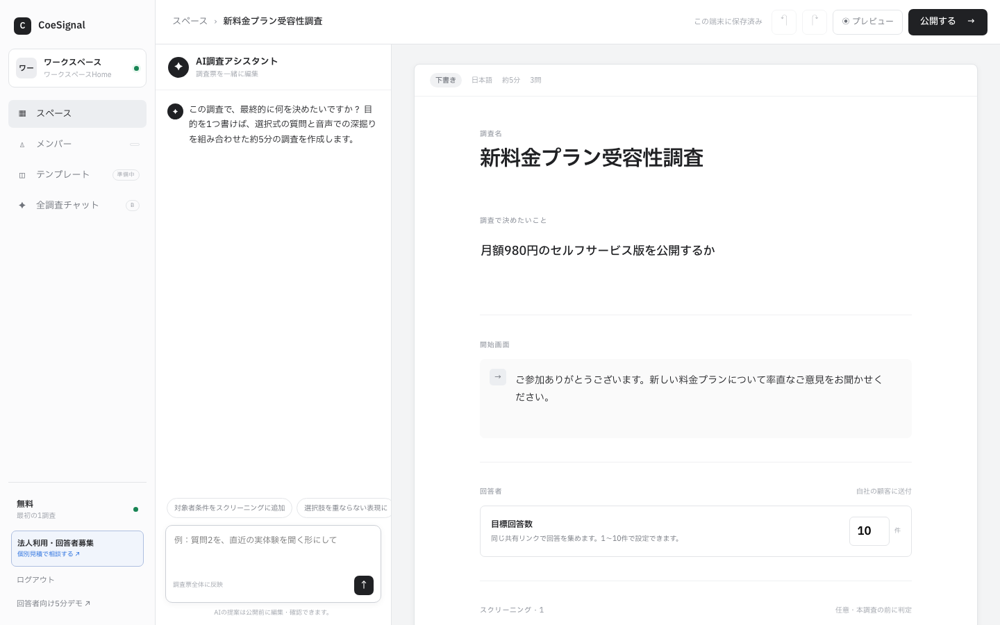

- デプスインタビューは1対1で「なぜ」を深く掘る定性調査。行動の背景・迷い・文脈はアンケートの選択肢からは出てこないため、今も代替の利かない手法。
- 従来のボトルネックはモデレーター確保・日程調整・1日に聞ける人数の限界・逐語録と分析の工数。AIモデレートでは同時並行・24時間の実査が可能になり、人の仕事は「問いの設計」と「解釈・判断」に移る。
- 質を決めるのは設計。意思決定の問いを一文に絞り、対象者条件・質問ガイド・深掘りポイントを決め、パイロットで磨いてから本番に入る。
アンケートの数字は揃っているのに、顧客が「なぜ」そう動くのかは説明できないまま、企画や改善案を担当者の推測で決めていないでしょうか。デプスインタビューが効くのは分かっていても、モデレーターの確保・日程調整・逐語録の重さを思うと、つい後回しにしてしまう——多くのリサーチ・商品企画・マーケの現場で起きていることです。この記事では、その「重さ」をAIモデレートでどう解消し、デプスインタビューの設計・実査・分析をどう回すかを、明日から使える手順に落として解説します。
デプスインタビューとは？なぜ今も必要か？
1対1で「なぜ」を深く掘る定性調査。行動の背景・迷い・文脈は、アンケートの選択肢では出てこない。
デプスインタビュー（深層面接）とは、対象者と1対1で向き合い、行動や選択の背後にある「なぜ」を深く掘り下げる定性調査の手法です。グループインタビューと違って他人の目がないため、周囲に合わせた発言に流れにくく、一人の語りを時間をかけて追いかけられます。
購入をやめた本当の理由、乗り換えたときの迷い、口には出しにくい不満——こうした「本人もうまく言語化していないこと」を、対話の往復の中から引き出すのがデプスインタビューの仕事です。
アンケートで代替できないのは、アンケートが「用意された選択肢への反応」しか集められないからです。選択肢を作った時点で、作り手の仮説の外にある答えは拾えません。
デプスインタビューは逆に、仮説の外にある答えに出会うための手法です。新規事業の顧客理解、解約理由の深掘り、コンセプト開発の前段など、「何を聞くべきかすらまだ固まっていない」局面で最も力を発揮します。だからこそ、調査の自動化が進んだ2026年でも、デプスインタビューそのものの必要性は変わっていません。変わったのは、それを実施する方法です。
アンケートは「どれくらいの人がそうか」を測る道具。デプスインタビューは「なぜそうなのか」を知る道具。問いの種類が違うので、どちらかで代用はできない。
従来のデプスインタビューは何がボトルネックか？
モデレーター確保・日程調整・1日に聞ける人数の限界・逐語録と分析の工数が、実施の壁になる。
デプスインタビューが有効だと分かっていても、実務では「重い」手法として敬遠されがちでした。ボトルネックは大きく4つあります。
- モデレーターの確保。深掘りの質はモデレーターの技量に大きく依存します。社内に熟練者がいなければ外部に依頼することになり、その分の調整と費用が発生します。
- 日程調整の負担。対象者・モデレーター・会議室（またはオンラインの枠）の予定を一人ずつ合わせる必要があり、リクルートから実査開始までに時間がかかります。
- 1日に聞ける人数の限界。1対1で時間をかけて聞く以上、モデレーター1人が1日にこなせる人数はごくわずかです。対象者を増やすほど、実査期間は線形に延びます。
- 逐語録と分析の工数。実査が終わっても、録音からの書き起こし、発言の整理、示唆の抽出という後工程が控えています。この工程が重いために、せっかくの語りが十分に活用されないまま終わることもあります。
結果として何が起きるかというと、「聞けば分かるはずのことを、聞かずに決める」という意思決定です。デプスインタビューを回すコストが高いために、本来は語りを聞いてから決めるべき論点が、担当者の推測やアンケートの数字だけで進んでしまう。
ボトルネックの本質は、個々の作業の重さそのものよりも、この「聞かない意思決定」を常態化させてしまう点にあります。
デプスインタビューの最大のコストは、実査の費用ではない。「重いから今回はやめておこう」と、聞かずに決めてしまうことだ。
AIでデプスインタビューはどう変わるか？
AIがモデレートし、同時並行・24時間の実査が可能に。人の仕事は問いの設計と解釈・判断に移る。
AIインタビューでは、モデレーターの役割をAIが担います。回答者は配布されたURLを開き、自分の都合のよい時間に、声で（またはテキストで）質問に答えます。AIは回答の内容を受けて、「それはどんな場面でしたか」「なぜそう感じたのですか」と一人ずつ聞き返し、語りを深掘りしていきます。
人間のモデレーターが1日数人ずつ逐次こなしていた実査が、同時並行かつ24時間で回るようになります。従来手法との違いを整理すると次の通りです。
| 観点 | 従来のデプスインタビュー | AIインタビュー |
|---|---|---|
| 実査の進め方 | モデレーターが1対1で逐次実施 | AIがモデレートし、複数の回答者と同時並行 |
| 実施時間 | 全員の予定を合わせて日程調整 | 回答者の都合のよい時間に24時間実施可能 |
| 深掘り | モデレーターの技量に依存 | 設計した深掘りポイントに沿ってAIが聞き返す |
| 記録 | 録音から逐語録を書き起こす | 回答が音声とテキストでそのまま残る |
| 人の役割 | 実査・書き起こし・分析の実務全般 | 問いの設計と、結果の解釈・判断に集中 |
実務の流れはシンプルで、設計（問いと質問ガイドを作る）→ URL配布 → 実査（回答者が声で答え、AIが聞き返す）→ 横断分析という一本の流れになります。実査中のやり取りは、たとえば次のようなイメージです。
図：AIが回答者の言葉を拾って聞き返す例。深掘りの観点は事前に人が設計します（※やり取りはサンプル）。
AIに任せる部分と、人に残る部分
重要なのは、AIに置き換わるのは「実査のオペレーション」であって、調査の中核ではないという点です。何を意思決定するためにこの調査をやるのか、誰に何を聞くのか、どこを深掘りさせるのか——問いの設計は人の仕事として残ります。
そして上がってきた語りをどう解釈し、事業の判断につなぐかも人の仕事です。AIは実査と整理を圧縮し、人がこの2つに時間を使えるようにする道具だと捉えるのが正確です。
具体例：CoeSignalの場合
具体例として、TechWorkerのAIインタビュープラットフォームCoeSignalでは、AIが一人ずつ深掘りするインタビューをURL配布で実施し（回答は声・テキストどちらも可。リアルタイム通話ではないため、回答者は自分のペースで話せます）、設計・実査・分析・納品までが一つの流れになっています。
成果物は発言の羅列ではなく、結論・反証・次の検証・引用元・許諾済みの原音声に遡れる「判断メモ」の形で受け取れます。
配布先は自社の顧客や社員のほか、Managed Researchでは提携ネットワーク100万人以上からの対象者の募集にも対応しており、自社で使うEnterprise Controlと依頼して任せるManaged Researchの2形態から選べます。
質の高いインタビュー設計はどう作るか？
意思決定の問いを一文に絞り、対象者条件・質問ガイド・深掘り点を決め、パイロットで磨いて本番へ。
実査をAIに任せられるようになった分、成否はほぼ設計で決まります。実務の手順は次の6ステップです。
- 意思決定の問いを一文にする。「この調査が終わったら、何を決められるようになっていたいか」を一文で書く。例：「解約者は何をきっかけに離脱を決めているかを知り、次の改善の優先順位を決める」。これが書けない調査は、聞く前に設計をやり直します。
- 対象者条件を決める。問いに答えられるのは誰か。「直近半年以内に解約した人」「週3回以上自炊する人」のように、行動ベースで条件を絞ります。
- 質問ガイドを設計する。導入（話しやすい事実の質問）から始め、具体的な行動・場面の質問を経て、理由や感情に踏み込む順に並べます。1問1論点を守り、聞きたいことを詰め込みすぎないこと。
- 深掘りポイントを指定する。どの回答が出たらどこを掘るか（例：「面倒」という言葉が出たら、何の工程が面倒なのかを具体化する）を事前に決めておきます。AIモデレートでは、この指定がそのまま深掘りの質になります。
- パイロットを回す。本番の前に少人数で試し、質問の伝わり方・回答の出方・深掘りの効き方を確かめて、ガイドを修正します。
- 本番の実査に入る。途中で語りの傾向を見ながら、必要に応じて対象者を追加します。
ステップ1の一文が書けると、残りの設計は機械的に分解できます。たとえば次のようなイメージです。
図：意思決定の問い一文を、対象者条件・質問ガイド・深掘りポイントに分解した流れ（※一般的な架空例）。
CoeSignalでは、この分解をそのまま調査設計画面で編集します。意思決定の問い・対象者条件・深掘り方針を一つの画面で行き来しながら、パイロットの前にガイドを磨き込めます。

図：CoeSignalの調査設計画面（実際のプロダクト画面。表示内容はデモデータ）。
質問の立て方：意見ではなく、行動と場面を聞く
設計の質を最も左右するのが、個々の質問の立て方です。原則は「意見ではなく、実際にあった行動と場面を聞く」こと。人は自分の未来の行動や一般論を語るのは苦手ですが、実際にあった出来事は具体的に話せます。
図：質問の立て方の一般的な原則。仮定への意見ではなく、実際の行動と場面から聞き始める（例）。
誘導しない：深掘りは「なぜ」「具体的には」で掘る
もう一つの原則は、誘導しないことです。「やっぱり価格が理由ですか？」のように答えを先回りする聞き方は、その方向の回答を引き出してしまいます。深掘りは「なぜ」「具体的には」「そのとき何を」で掘るのが基本です。
AIモデレートの場合も同じで、質問ガイドに誘導的な文言が入っていれば、AIはそれを忠実に再現してしまいます。設計段階でのレビュー（パイロットでの確認）が、そのまま調査全体の信頼性になります。
図：誘導する聞き方と中立に掘る聞き方の対比（※一般的な架空例）。
チェックの基準はシンプル。「この質問は、相手が実際に経験したことを聞いているか？ それとも、こちらの仮説への同意を求めているか？」。後者が混ざっていたら設計に戻る。
まず何をすべきか
この記事を閉じたあとの最初の一歩は、次の3つです。
- 意思決定の問いを一文で書く。「この調査が終わったら、何を決められるようになっていたいか」。書けなければ、まだ実査に進む段階ではありません。
- 質問ガイドを作り、少人数でパイロットを回す。導入→行動・場面→理由の順で1問1論点。社内の数人に答えてもらえば、質問の伝わり方と深掘りの効き方が分かります。
- 磨いたガイドで本番の実査に入る。語りの傾向を見ながら対象者を追加し、発見が増えなくなったら分析に移ります。
AIインタビューの全体像はAIインタビューとはで、集めた語りを示唆に変える工程はインタビュー分析をAIで行うで扱っています。自社のテーマでの設計に迷う場合は、CoeSignalの無料相談でご一緒できます。
よくある質問
引き出せる場面は多くあります。相手が人ではないことで、かえって率直に話しやすいと感じる回答者もいますし、声で答える形式は選択式アンケートより語りの量と文脈が残ります。ただし、沈黙の意味や場の空気まで読み取る必要があるテーマでは、熟練モデレーターによる対面が向くこともあります。目的に応じた使い分けが前提です。
一律の正解人数はありません。定性調査では、新しい人に聞いても新しい発見が増えなくなる「飽和」を目安に人数を考えるのが一般的です。対象者の条件が絞れているほど少ない人数で飽和に近づき、条件が広いほど多くの声が必要になります。まず小さく聞き始め、発見が増え続けているかを見ながら追加していくのが実務的です。
「なぜ」の仮説を広く集めたい、多くの対象者に短期間で聞きたい、地理的に散らばった相手に聞きたい場面はAIが向きます。一方、繊細なテーマで信頼関係の構築から必要な場合や、表情・沈黙・その場の反応まで観察したい場合は対面が向きます。AIで広く聞いて論点を絞り、重要な相手にだけ対面で深く聞く組み合わせも有効です。
発言を根拠として遡れる状態にしておくことは必要です。従来は録音から逐語録を起こす作業が大きな負担でしたが、AIインタビューでは回答が音声とテキストの両方で記録されるため、書き起こし作業そのものが実質的に不要になります。重要なのは逐語録という形式ではなく、分析の結論から元の発言・原音声に遡れる導線を保つことです。